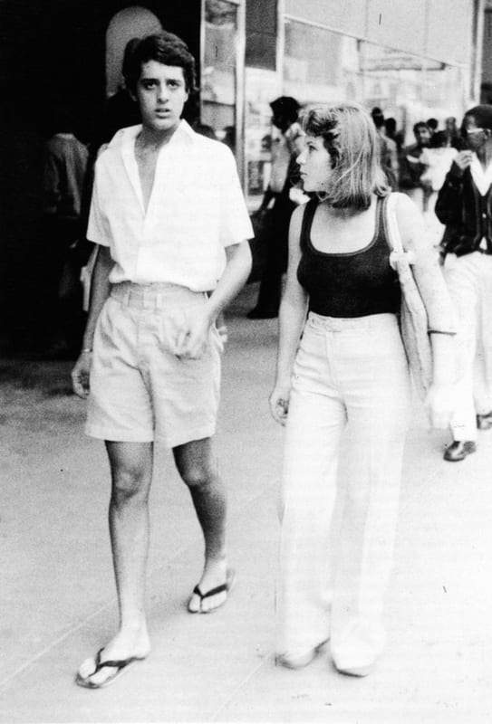

Durban · 1975
Stardust & Beyond.
Durban's only gay club, found down a dark alleyway in 1975. A new and often shocking world, and the friendships that changed everything.

The archive




Durban · 1975
Durban's only gay club, found down a dark alleyway in 1975. A new and often shocking world, and the friendships that changed everything.
